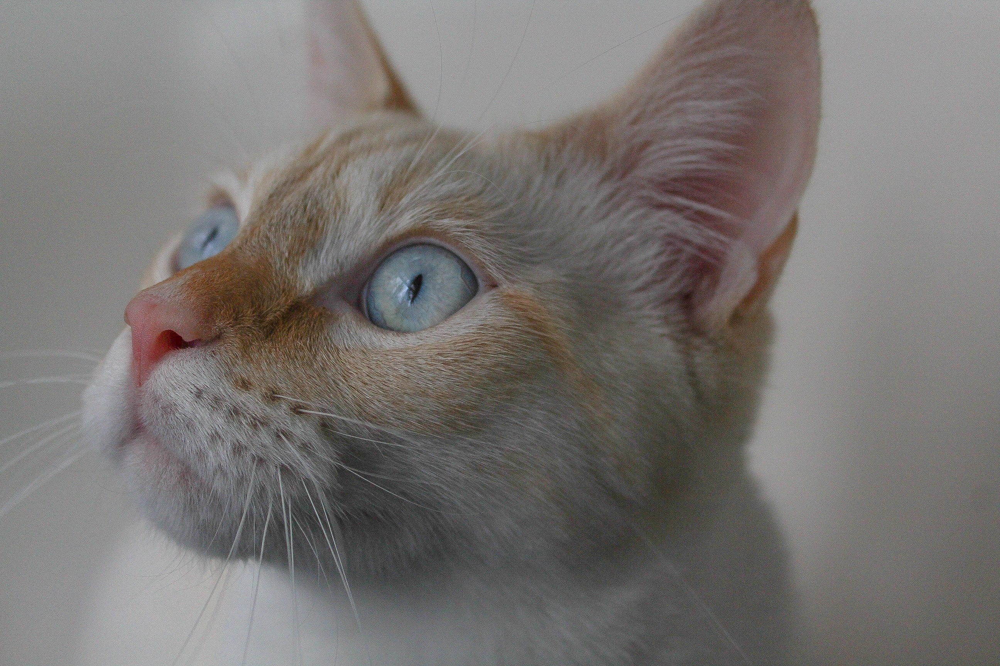

They have many things they eat they are omnivourus creatures so they eat things like vegatables or meat thye also eat the things combined in thier cat food which can range from wet to dry but there are certain foods that you should avoid because it will make them sick i will list them below

image by alexis ridges from shopify.com